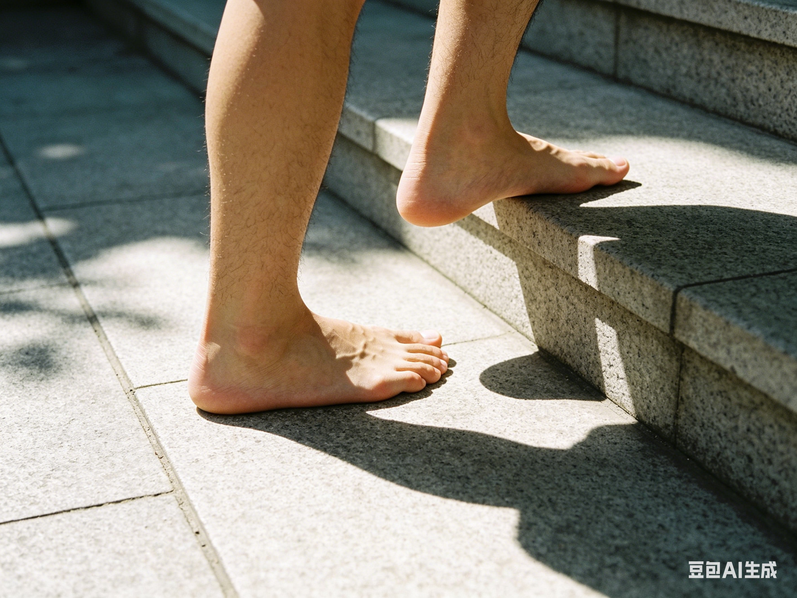
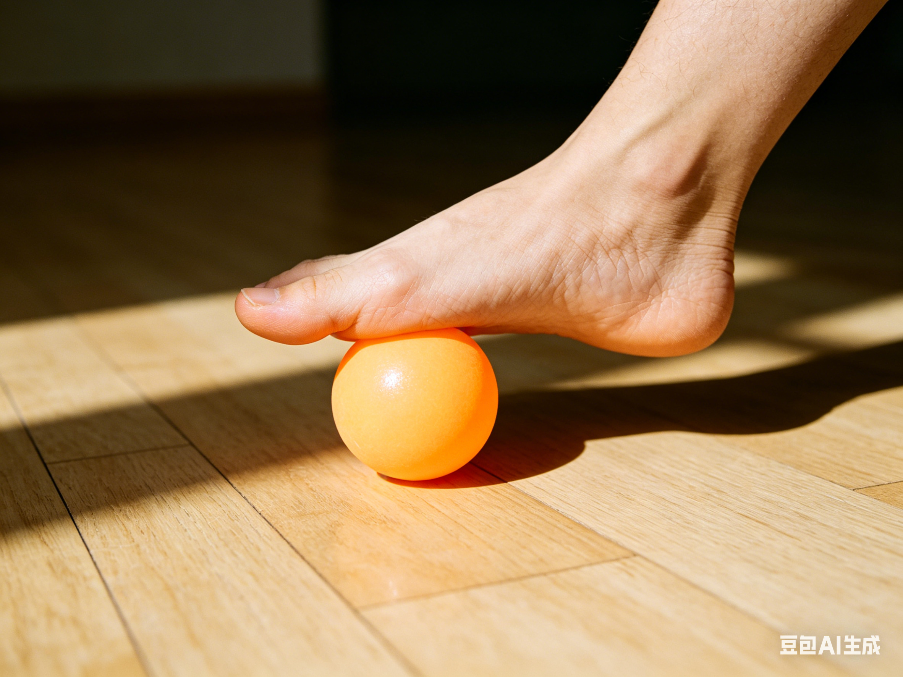
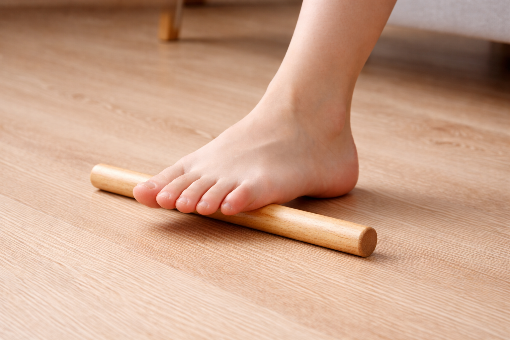
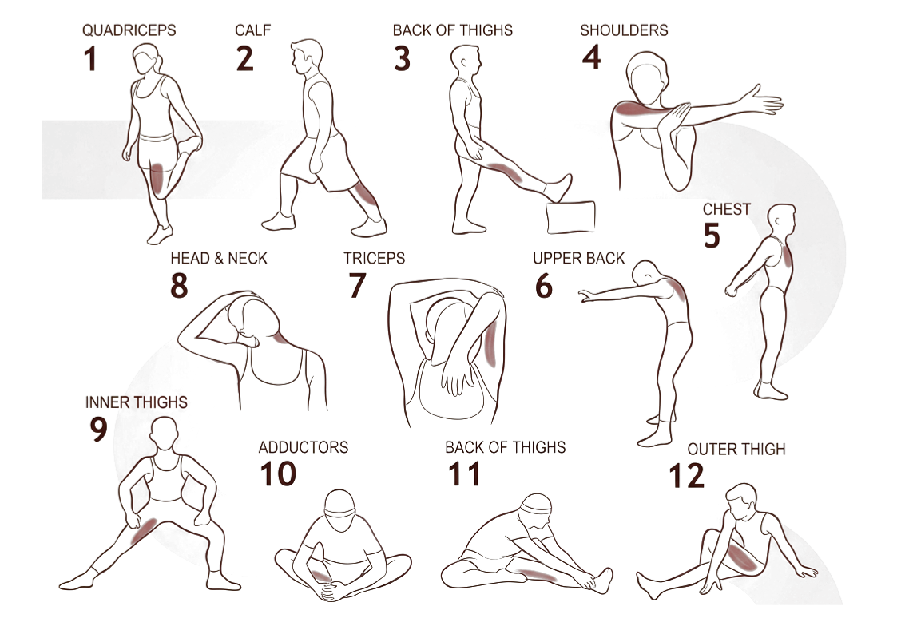
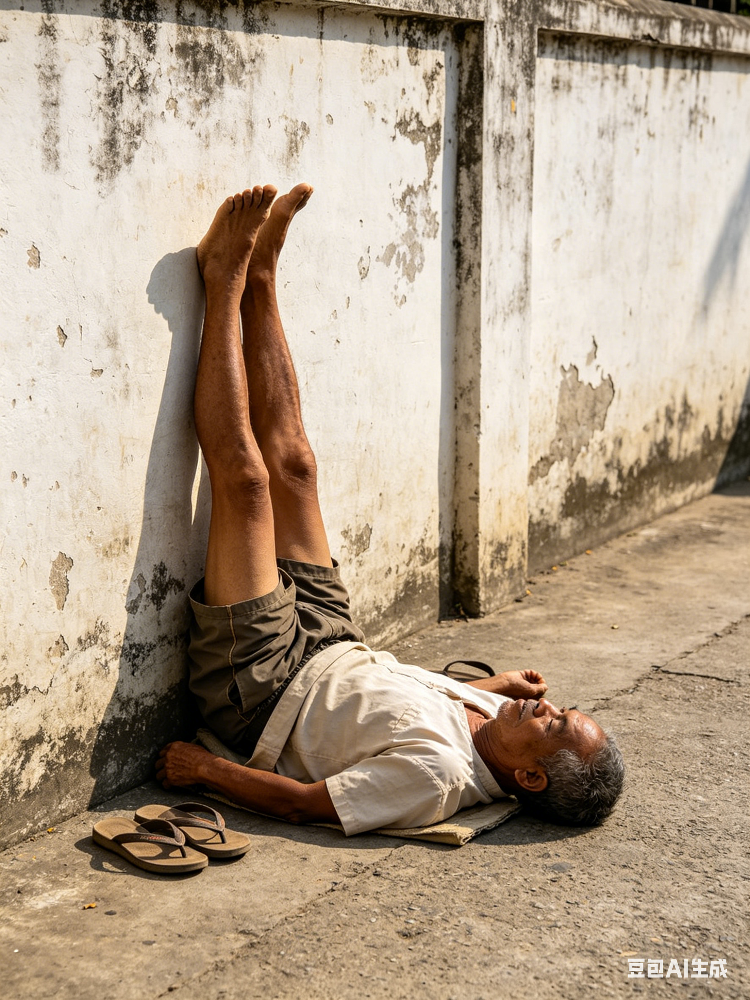
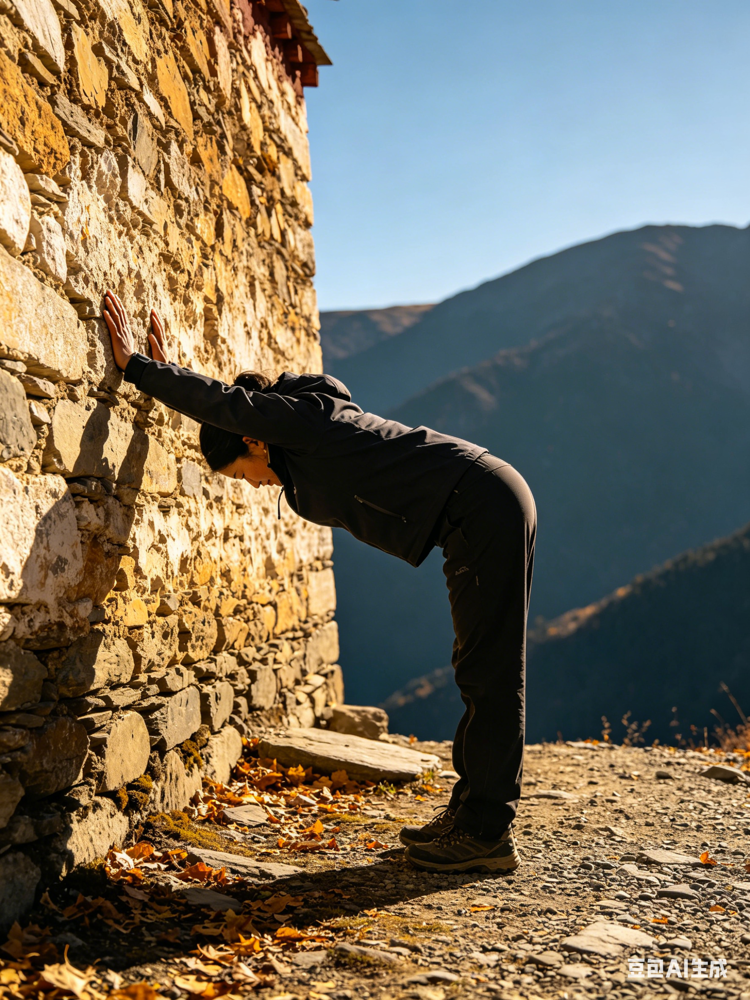
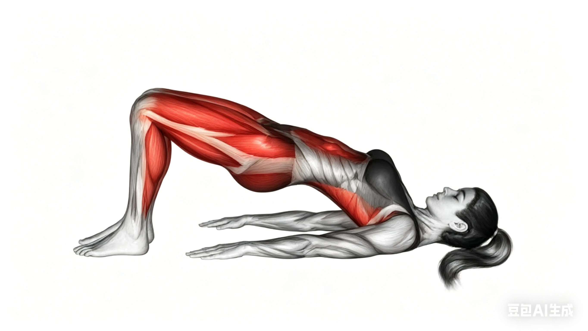

每年，我們都在升級腳下的鞋、背上的包，
但最值得我們溫柔對待的，是陪我們走過千里的這副身體。
身體不是在走下坡，它是在進化成更有智慧的載體。
我們不求練出強大的肌肉，
但求透過平日的微小調校——
讓腳底更有支撐，讓核心更有力量，讓筋膜更有韌性。
升級裝備，是為了減少負擔；
調校身心，是為了圓滿修行。
身體度量衡：三維度診斷
結構穩定度
驅動平衡力
柔韌修復力
行走中的修復之道
如何在行腳隨香過程中即時釋放壓力，由地基至肩頸全面恢復

1. 階梯與路緣石：小腿與足底的「解藥」
台階掛跟法（小腿拉筋）
動作：前腳掌踩在台階邊緣，後腳跟懸空並自然下墜。
作用：利用體重深度拉展腓腸肌，帶走酸性物質。
台階足弓按壓
動作：踩在階梯邊緣稜角處，將足弓痠痛點對準稜角，重心左右移動。
作用：物理性鬆解足底筋膜，緩解足底劇痛。
日常修復：足底壓力鬆解

足底按摩球

足底擀麵杖
2. 十分鐘休息伸展拉筋動作
一圖掌握十二組核心伸展：滑鼠懸停即可喚醒細節色彩。

3. 止息後的深層滋養
抵達香燈腳休息站或歸家後的儀式，讓疲憊歸於沈靜。

靠牆倒腳式
場景：路燈桿或牆邊
將雙膝靠牆垂直向上，釋放整日行走的腿部壓力，消水腫並靜心。

立姿半前彎
場景：廟柱或圍欄
雙手扶牆或支撐物，上半身與地面平行，拉開緊繃的腰背與大腿後側。
深蹲合十式
場景：空地休息
深度下蹲，雙手合十肘撐膝蓋，徹底打開髖關節，讓負重的腰椎獲得自由。
長常隨香：年度訓練計劃
「平日保持運動習慣，維持力量、穩定與韌性。」
地基、引擎與核心

橋式 (Bridge)
完整教學喚醒臀大肌，將負擔從膝蓋轉移到身體最強的肌肉。
呼吸與心跳節律
4-7-8 呼吸與減壓
吸氣 4 秒、憋氣 7 秒、吐氣 8 秒。適合在練習的核心穩定後，作為收尾，訓練心肺與情緒穩定。
行前 4 月負重攻略
2kg 負重，平地 5km 快走。觀察腳底與鞋子適配度。
3kg 負重，加入 50-100 階梯練習。開始每日核心穩定練習。
5kg 負重，嘗試連續行走 3 小時。這時核心力量將支撐你的腰椎。
負重減至 1kg，專注呼吸節奏與心態調整。身心合一，靜待出發。
生活場景：隨手可得的訓練
共同完善隨香地圖
「這份指南還在成長，如果您在路上有任何『痛點』或『妙方』，歡迎告訴我們，讓我們一起完善這隨香地圖。」